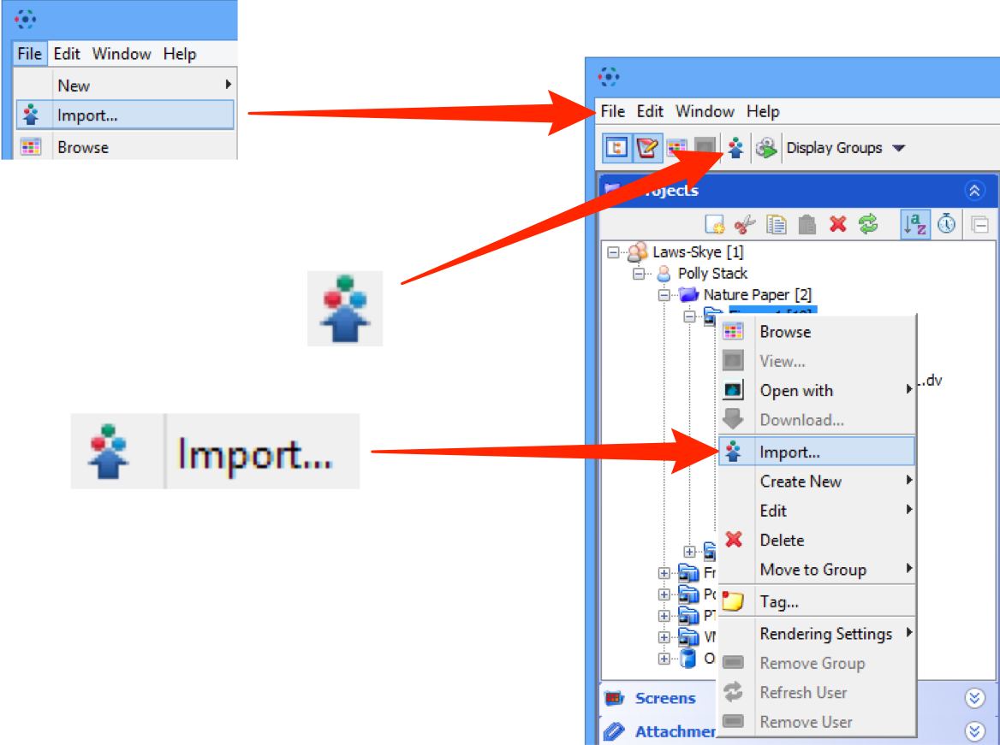
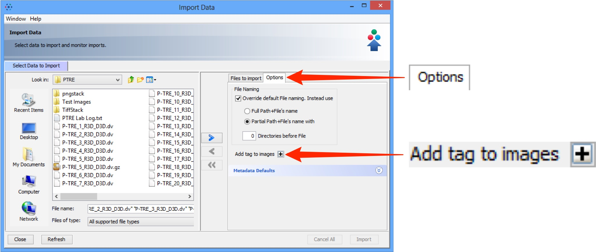
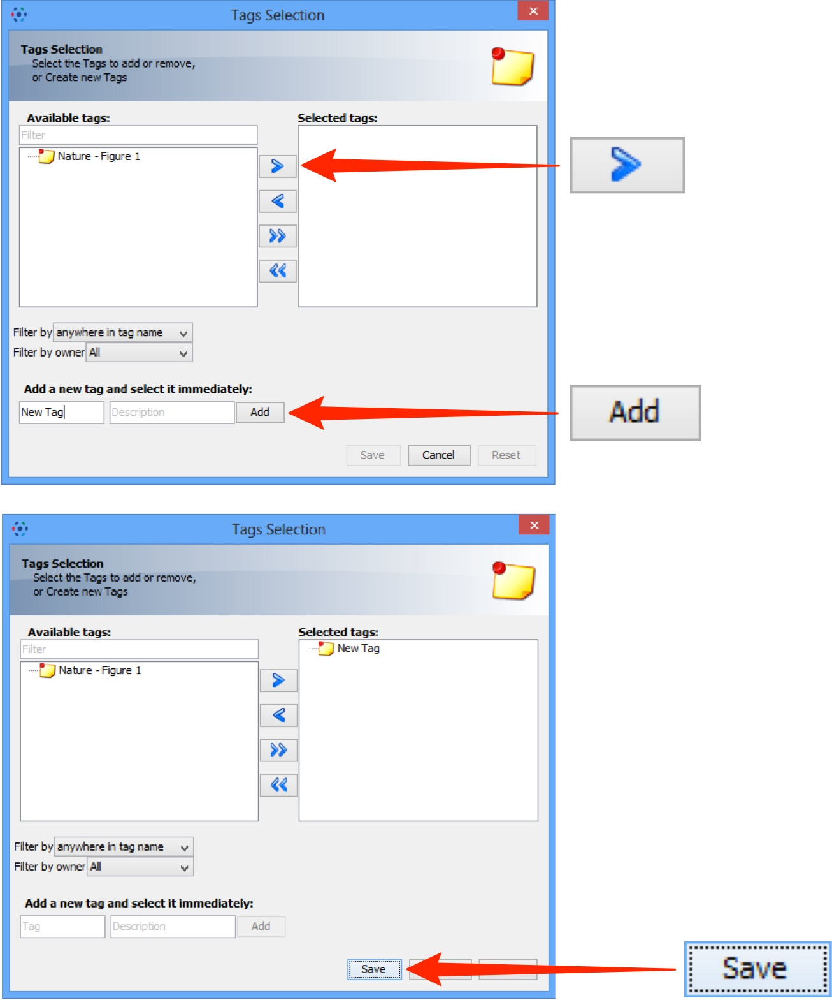
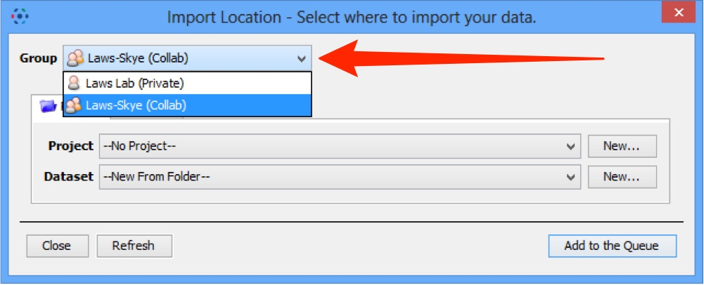
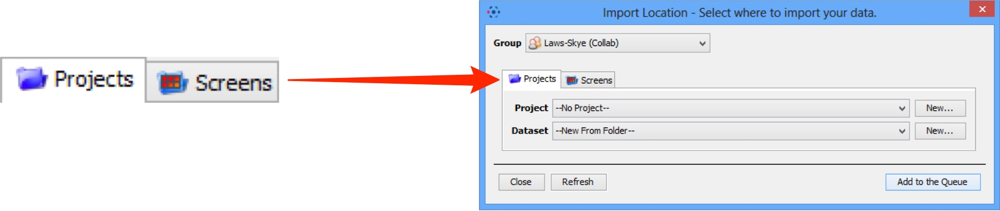
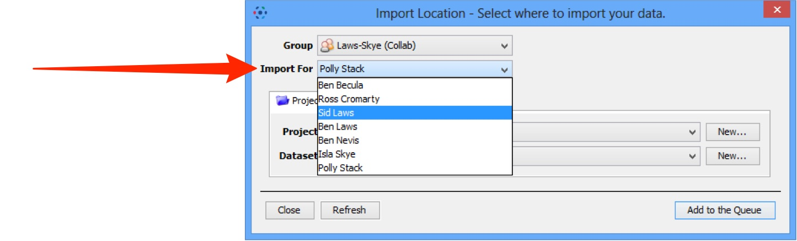
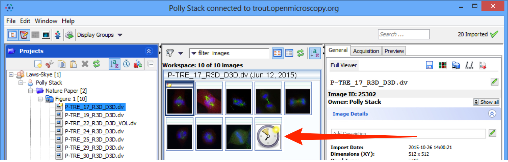

Using OMERO.insight to import image data onto the OMERO server.
Select Import from the File menu;
or click on the Import icon in the toolbar;
or select a destination Project or Dataset for the imported data and right click then select Import.

Use the File Chooser to locate data to be imported on local or networked drives.

Select image data to be imported.
Click the right Add arrow.

Specify a location for saving imported data:
- select a group if you are a member of more than one
- a new project and/or dataset can be created
- an existing project and/or dataset can be selected from the drop-downs
- a new dataset can be automatically created from the source folder
- click Add to the Queue

Data to be imported appears in queue pane.
When ready click on Import.

Import progress will be shown in the Import # 1 tab.
Further data can be queued and imported using the Select Data to Import tab.
Multiple queues can be run simultaneously.
A green check is shown in the import tab and in the top right corner of the main Data Manager window when the queue is successfully imported.
Close the Import window and refresh the data tree to view the data in the Data Manager.

Note
From Version 5, OMERO imports and stores image files unchanged, in their original format. Therefore there is no longer any need to archive files on import.
Double-click on the thumbnail or select from the View menu to open the image in the full viewer.

Click the Refresh button to see the imported data in the data manager.
Import progress is shown by a green tick on the right-hand side of the data manager window toolbar.
Notifications of any import failure will also appear there with a red X.

Select an image and click on the File Path button to see the file path for where the data was imported from and its path in the OMERO data repository.
Click on the Located in tab to see where the data is in the OMERO.insight data manager.

Importing Options
The following points illustrate how to set some of the options that can be used when importing.

Adding tags at import
Click the Options tab then Add Tags to batch-add tags to the data as it is imported.

Select an existing tag in the left hand pane and click the right arrow;
or enter the name of a new tag and click Add.
Click Save to add these tags to the data at import.

After saving, tags can be seen in the Options tab and can be removed by clicking the - button.

Selecting a group to import into
If you are a member of more than one group, use the Group drop down box to select which group to import the data into.

Toggle between project and screen
Click the Project - Screen tabs to change between image and screen data.
The File Finder window changes to reflect available file types, according to the selection.

Importing for Another User
If you are an Administrator user, use the Import For drop down box to select another user to import the data as. The chosen user will then own this data.
The projects and datasets shown in the drop-down boxes as available to import into, is determined by the permission status of the group being used.

Generation of Pyramid Files After Import
OMERO will generate an image pyramid for any image that is over 3000 x 3000 pixels, very large confocal scans, images captured by very large detectors and for certain file formats such as .lsm, .jpeg or .tiff.
This takes place on the server after the data has been uploaded and processed by the importer.
OMERO.insight and OMERO.web display a clock icon in place of the thumbnail in the centre pane of the data manager until the pyramid generation has been completed by the server.
The image will not be available for viewing in OMERO.insight or OMERO.web until the process is complete. For images that are very large or have a number of resolution levels, this can take some time.
Some formats such as .svs contain a pre-calculated pyramid so should not incur any additional processing overhead.

Note
If you regularly have problems with the time taken to generate pyramids for your imported images, speak to your OMERO system administrator as they may be able to adjust the OMERO server configuration to optimise the processing.
All Tutorial Material is available on line at: help.openmicroscopy.org
The Main OME website is at: www.openmicroscopy.org